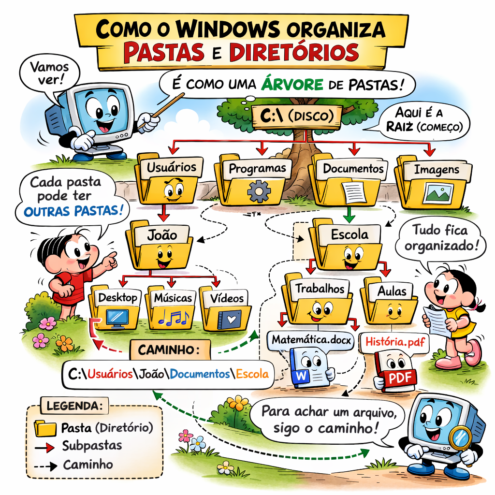
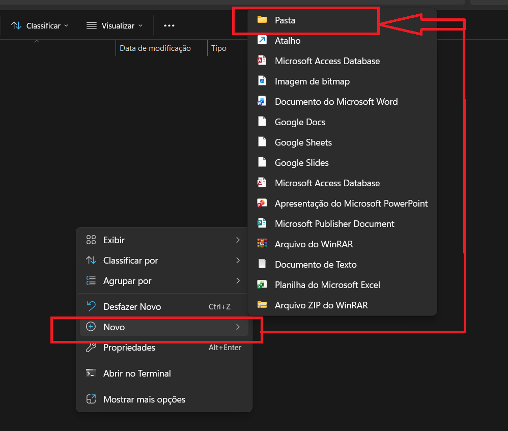
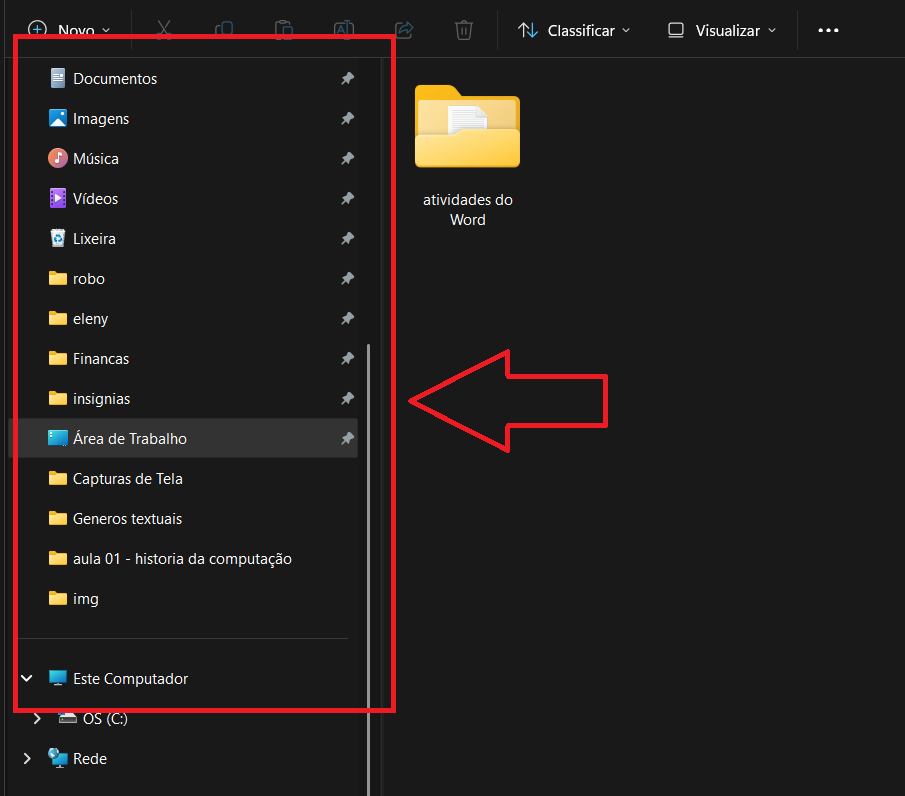

Uma pasta é um lugar onde você guarda arquivos e outros objetos. Ela é como uma gaveta no seu armário: você pode organizar suas coisas para achar fácil depois.
No Windows, pastas também são chamadas de diretórios. O diretório é a forma que o computador usa para organizar tudo em uma estrutura em árvore.

Atalho rápido: dentro de qualquer pasta, pressione Ctrl + Shift + N para criar uma nova pasta imediatamente.
Diretório é o caminho que leva até um arquivo ou pasta. Por exemplo:
C:\Users\SeuNome\Documentos\Trabalho\relatorio.docx
Esse caminho mostra que o arquivo relatorio.docx está dentro da pasta Trabalho, que está dentro de Documentos, que está dentro de SeuNome.
É como se você abrisse pastas dentro de outras pastas, formando uma hierarquia. Isso ajuda a manter tudo organizado.

No Explorador de Arquivos, há um painel à esquerda com atalhos para pastas importantes, como Área de Trabalho, Documentos, Downloads e Imagens.
Esse painel é chamado de Acesso Rápido e facilita abrir suas pastas mais usadas rapidamente. Para adicionar uma pasta, clique com o botão direito nela e escolha Fixar em Acesso Rápido.
Se quiser remover, clique com o botão direito no atalho e escolha Remover de Acesso Rápido.